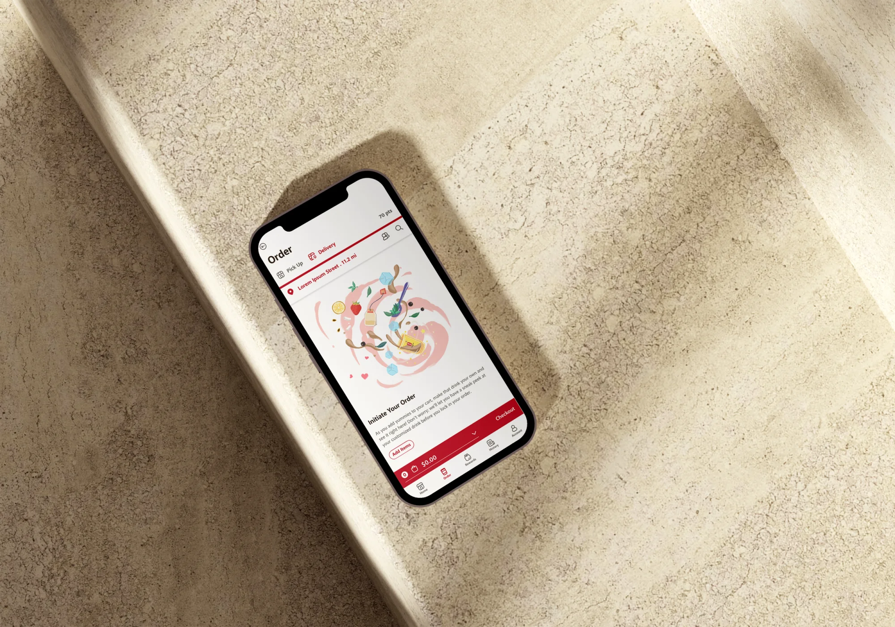

The problem
一杯茶的定制,人人不同。
奶茶是高頻復購、重度客製化的品類:糖度、冰量、加料的組合幾乎人人不同,高峰時段的排隊與口頭點單的溝通成本,直接影響顧客體驗和門店效率。同時,品牌若只能依靠第三方外送平台觸達顧客,既要承擔高達 30% 的佣金,也無法沉澱自己的會員資產 —— Gong cha 因此希望建立自己的 Loyalty System:自主的促銷渠道,以及屬於品牌的積分累積與兌換體系。
數位化的第一步其實是店內 Kiosk:加盟經營中人力是最高昂的開支,Kiosk 讓尖峰時段的櫃台人力從兩人減到一人,直接改善了加盟商的利潤結構。Kiosk 落地之後,加盟商和顧客的訴求轉向了品牌自己的 App。
核心問題是:如何讓顧客在不依賴店員的情況下,自主完成複雜的飲品定制與獎勵兌換,並讓這個體驗好到足以把顧客從第三方平台拉回品牌自有渠道?
